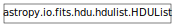

HDU Lists¶

HDUList¶
-
class
astropy.io.fits.HDUList(hdus=[], file=None) [edit on github][source]¶ Bases:
list,astropy.io.fits.verify._VerifyHDU list class. This is the top-level FITS object. When a FITS file is opened, a
HDUListobject is returned.Construct a
HDUListobject.Parameters: hdus : sequence of HDU objects or single HDU, optional
The HDU object(s) to comprise the
HDUList. Should be instances of HDU classes likeImageHDUorBinTableHDU.file : file object, optional
The opened physical file associated with the
HDUList.-
append(hdu) [edit on github][source]¶ Append a new HDU to the
HDUList.Parameters: hdu : HDU object
HDU to add to the
HDUList.
-
close(output_verify='exception', verbose=False, closed=True) [edit on github][source]¶ Close the associated FITS file and memmap object, if any.
Parameters: output_verify : str
Output verification option. Must be one of
"fix","silentfix","ignore","warn", or"exception". May also be any combination of"fix"or"silentfix"with"+ignore",+warn, or+exception" (e.g. ``"fix+warn"). See Verification options for more info.verbose : bool
When
True, print out verbose messages.closed : bool
When
True, close the underlying file object.
-
fileinfo(index) [edit on github][source]¶ Returns a dictionary detailing information about the locations of the indexed HDU within any associated file. The values are only valid after a read or write of the associated file with no intervening changes to the
HDUList.Parameters: index : int
Index of HDU for which info is to be returned.
Returns: fileinfo : dict or None
The dictionary details information about the locations of the indexed HDU within an associated file. Returns
Nonewhen the HDU is not associated with a file.Dictionary contents:
Key Value file File object associated with the HDU filename Name of associated file object filemode Mode in which the file was opened (readonly, update, append, denywrite, ostream) resized Flag that when Trueindicates that the data has been resized since the last read/write so the returned values may not be valid.hdrLoc Starting byte location of header in file datLoc Starting byte location of data block in file datSpan Data size including padding
-
filename() [edit on github][source]¶ Return the file name associated with the HDUList object if one exists. Otherwise returns None.
Returns: filename : a string containing the file name associated with the
HDUList object if an association exists. Otherwise returns None.
-
flush(output_verify='fix', verbose=False) [edit on github][source]¶ Force a write of the
HDUListback to the file (for append and update modes only).Parameters: output_verify : str
Output verification option. Must be one of
"fix","silentfix","ignore","warn", or"exception". May also be any combination of"fix"or"silentfix"with"+ignore",+warn, or+exception" (e.g. ``"fix+warn"). See Verification options for more info.verbose : bool
When
True, print verbose messages
-
classmethod
fromfile(fileobj, mode=None, memmap=None, save_backup=False, cache=True, **kwargs) [edit on github][source]¶ Creates an
HDUListinstance from a file-like object.The actual implementation of
fitsopen(), and generally shouldn’t be used directly. Useopen()instead (and see its documentation for details of the parameters accepted by this method).
-
classmethod
fromstring(data, **kwargs) [edit on github][source]¶ Creates an
HDUListinstance from a string or other in-memory data buffer containing an entire FITS file. Similar toHDUList.fromfile(), but does not accept the mode or memmap arguments, as they are only relevant to reading from a file on disk.This is useful for interfacing with other libraries such as CFITSIO, and may also be useful for streaming applications.
Parameters: data : str, buffer, memoryview, etc.
A string or other memory buffer containing an entire FITS file. It should be noted that if that memory is read-only (such as a Python string) the returned
HDUList‘s data portions will also be read-only.kwargs : dict
Optional keyword arguments. See
astropy.io.fits.open()for details.Returns: hdul : HDUList
An
HDUListobject representing the in-memory FITS file.
-
index_of(key) [edit on github][source]¶ Get the index of an HDU from the
HDUList.Parameters: key : int, str or tuple of (string, int)
The key identifying the HDU. If
keyis a tuple, it is of the form(key, ver)whereveris anEXTVERvalue that must match the HDU being searched for.Returns: index : int
The index of the HDU in the
HDUList.
-
info(output=None) [edit on github][source]¶ Summarize the info of the HDUs in this
HDUList.Note that this function prints its results to the console—it does not return a value.
Parameters: output : file, bool, optional
A file-like object to write the output to. If
False, does not output to a file and instead returns a list of tuples representing the HDU info. Writes tosys.stdoutby default.
-
insert(index, hdu) [edit on github][source]¶ Insert an HDU into the
HDUListat the givenindex.Parameters: index : int
Index before which to insert the new HDU.
hdu : HDU object
The HDU object to insert
-
readall() [edit on github][source]¶ Read data of all HDUs into memory.
-
update_extend() [edit on github][source]¶ Make sure that if the primary header needs the keyword
EXTENDthat it has it and it is correct.
-
writeto(fileobj, output_verify='exception', clobber=False, checksum=False) [edit on github][source]¶ Write the
HDUListto a new file.Parameters: fileobj : file path, file object or file-like object
File to write to. If a file object, must be opened in a writeable mode.
output_verify : str
Output verification option. Must be one of
"fix","silentfix","ignore","warn", or"exception". May also be any combination of"fix"or"silentfix"with"+ignore",+warn, or+exception" (e.g. ``"fix+warn"). See Verification options for more info.clobber : bool
When
True, overwrite the output file if exists.checksum : bool
When
Trueadds bothDATASUMandCHECKSUMcards to the headers of all HDU’s written to the file.
-